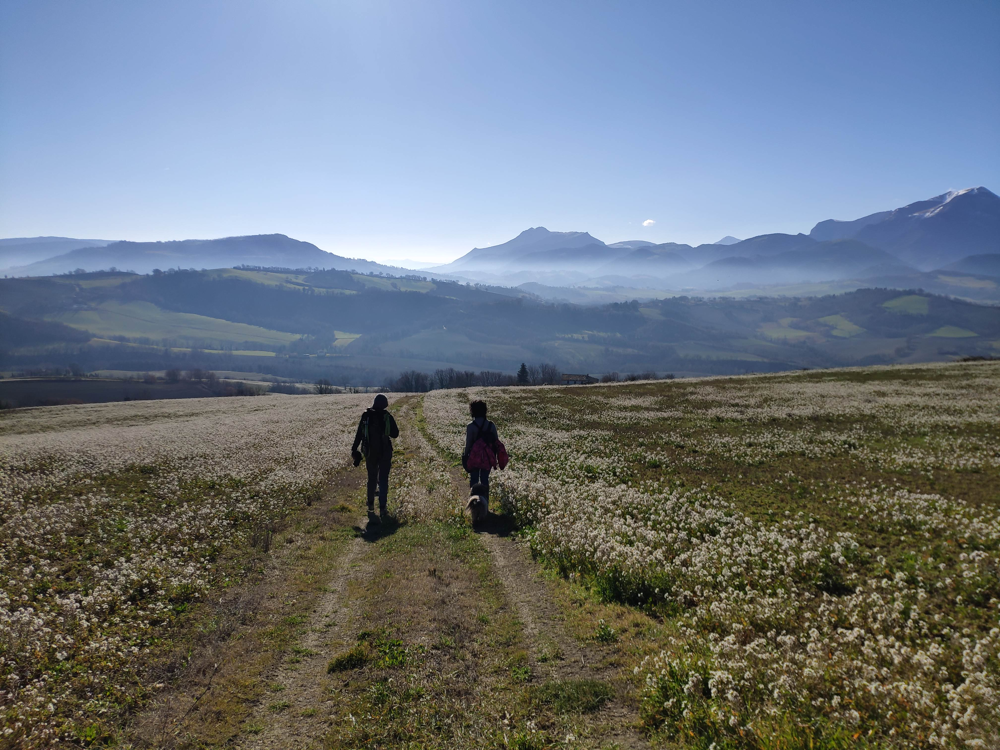
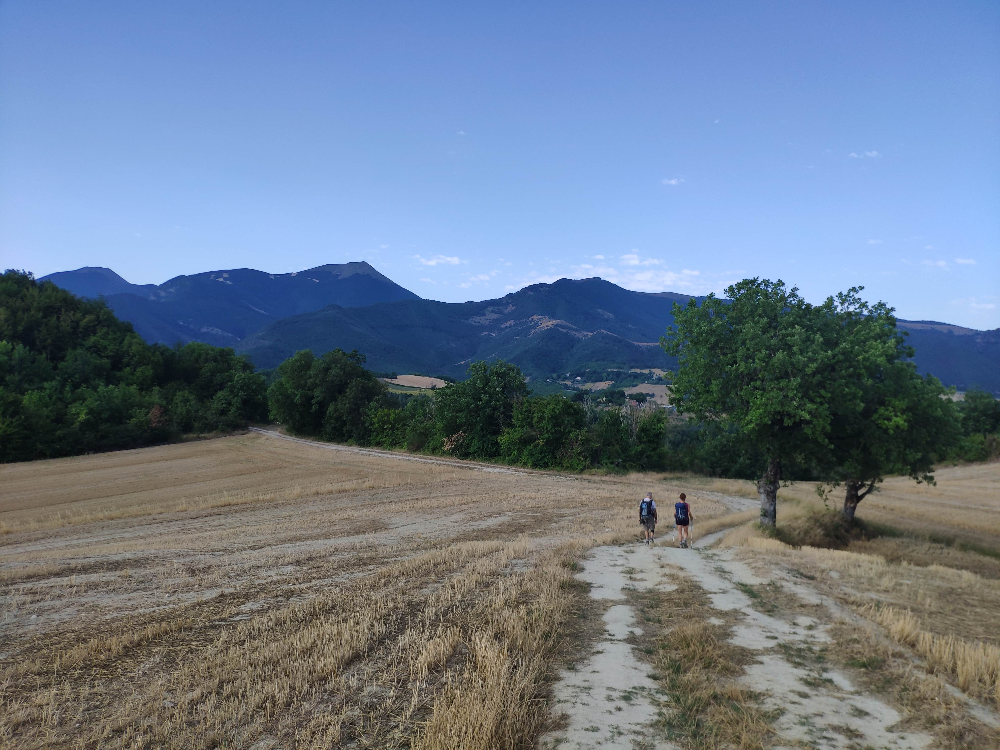

Urbino
Percorso +
Percorso
Itinerario
Tratte (GPX)
Preparati al percorso
Segnaletica
Credenziale
Storia e geografia +
Storia e geografia
Geologia del cammino
La storia dell'uomo
Storie e geografie del Duca
Geografia della cucina locale
Vino o birra?
Tradizioni
Natura e ambiente
Arrivare e muoversi +
Arrivare e muoversi
Arrivare ad Urbino
Arrivare a Gubbio
Collegamenti Gubbio - Urbino
Noleggi
Autolinee
Taxi
Dormire e mangiare +
Dormire e mangiare
Hotel
B&B
Ostelli
Tende
Bar
Alimentari
Gastronomie
Osterie
Ristoranti
Pizzerie
Attività e giochi +
Attività e giochi
Test del camminatore
Contest fotografici
Viaggi di gruppo
Orientamento
Geologo per un giorno
Altre attività
Info e sicurezza +
Info e sicurezza
Numeri di emergenza
Primo e pronto soccorso
Guardie mediche
Farmacie
Pro loco
IAT
Il cammino del Duca
Esplora
1 / 3
Urbino
2 / 3

Gubbio
3 / 3

Scheggia